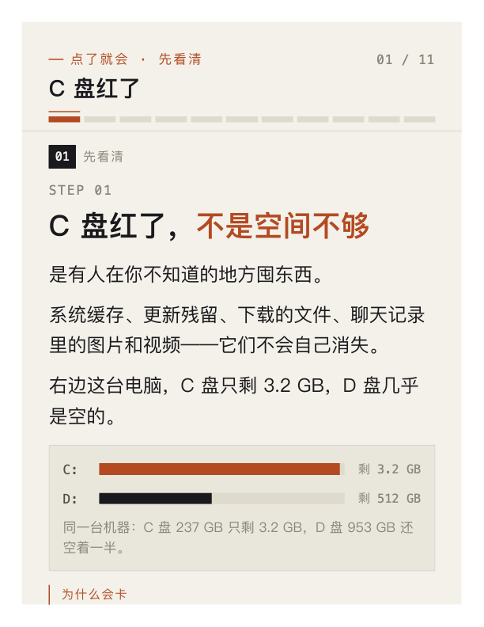
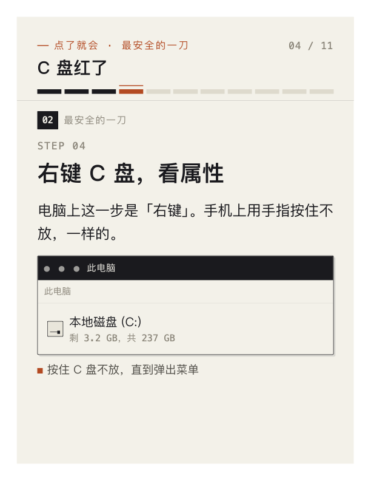
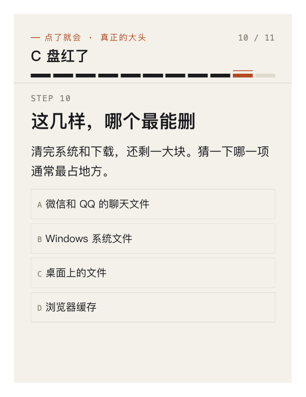
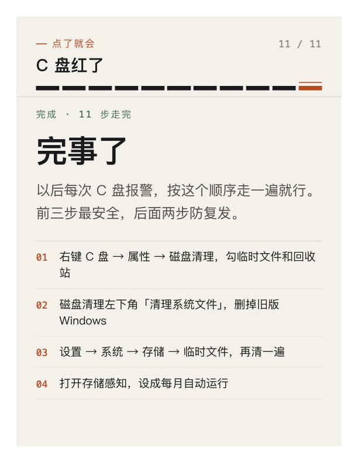

讲解纸面手册风：等宽编号、赭橙批注、衬线外的另一种气质
11 步，5 个沙盘。不是看图学，是在一个仿真的窗口里真点：找 C 盘、长按调出右键菜单、 勾选要清的项、把下载文件夹搬到 D 盘。点错了会告诉你为什么不能点，点对了才放行。
顶部那排细条是进度，走过的地方都能点回去重看。手机上没有右键，用长按 420 毫秒代替。




tools/tutorial/index.html 就能玩，进度条、长按、勾选、回溯都是活的。dist/tutorial.zip，6 个文件 14.4 KB，审计零告警。